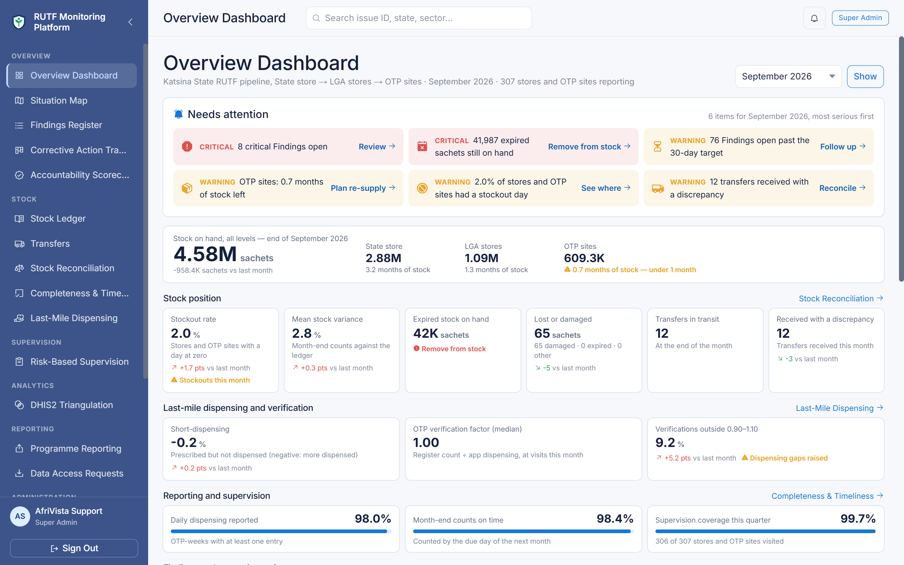
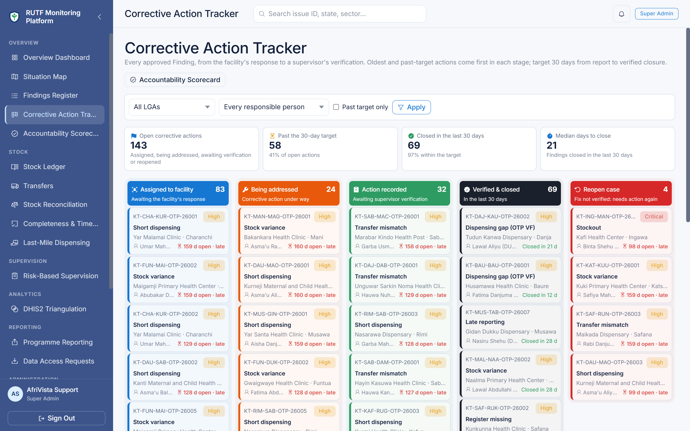

Ready-to-Use Therapeutic Food · Digital Traceability & Accountability Platform
Pilot: all LGAs in Katsina State
Every sachet of RUTF tracked, verified and accounted for, from the State store to the child.
One trusted record of every hand-over in the government supply chain. Discrepancies are found automatically,
every one is followed by a named person to verified closure, and the State, LGAs and partners get the same
evidence, even where there is no network signal.
State storeissues by lot & expiry
LGA storesreceipt confirmed
OTP sitesdaily dispensing
SupervisionGPS-verified visits
Findingsraised automatically
Verified closurewithin 30 days
What the platform does
1
Records every movement, offlineFacility staff record receipts, daily dispensing, counts and losses on an Android phone that works without signal and syncs itself.Offline Sync Health
2
Keeps one ledger that can't be rewrittenBalances are computed from entries by lot and expiry, never typed in; an entry is never edited or deleted, only voided with a reason.Stock Ledger
3
Finds problems automaticallyEvery night the ledger is checked against the programme's thresholds: stock variance, short-dispensing, transfer shortfalls, late reporting, expiry.Findings Register
4
Follows each one to verified closureEvery Finding has an owner and a 30-day target, and a supervisor verifies the fix. LGAs are scored on closure and timeliness.Corrective Action Tracker, Scorecard
5
Checks the last mile and the national systemSachets dispensed against prescribed, supervisors' register checks, and DHIS2 monthly reports set beside the ledger.Last-Mile Dispensing, DHIS2
6
Reports the month in one pageA Monthly Programme Report written from live data, ready to print for the State, LGAs and UNICEF.Programme Reporting

Overview Dashboard: what needs attention first, and stock at every level.

Corrective Action Tracker: every Finding by stage until verified closed; reopened cases in red.
In the pilot demonstration · September 2026
307stores and OTP sites in 34 LGAs on one ledger
98.0%of transfers delivered in full; shortfalls raised
97.5%of supervision visits GPS-verified on site
90.8%of DHIS2 reports agree with the ledger
100%of Findings raised by automatic checks
20.9 dmedian from Finding to verified closure
Built-in safeguards
Role-based access enforced by the database for web, app and API; 202 of 202 role checks pass.
No child-level data: aggregate OTP tallies only. Designed for the NDPA 2023.
Nothing deleted: ledger entries are voided with a reason; Findings stay on record.
Data leaves by approval only: scoped to the requester, downloadable once, on record.
Full Audit Trail written by the database itself: who changed what, and when.
Findings are for review, not accusation: the score shows where support is needed.